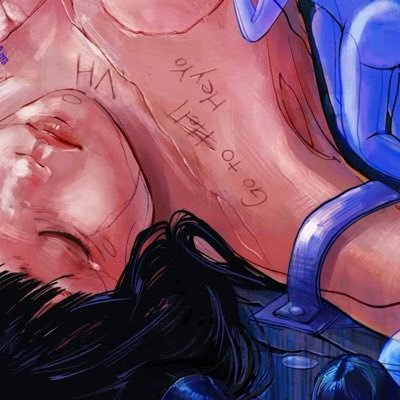

citron：学生、设计工程师，和一个 NeoDB 客户端
一位年轻的 iOS 开发者，2026 年 Swift Student Challenge 获奖者，同时是 Photon（把 AI Agent 带进 iMessage、WhatsApp 等日常聊天渠道的创业公司）的创始设计工程师。他做的 Piecelet 是 Mastodon 与开源书影音社区 NeoDB 的 iOS 客户端。
- iOS
- SwiftUI
- 设计工程
- 联邦宇宙
- AI Agent
一句话：一个同时在学生竞赛和创业公司里发光的设计工程师，关心开放网络与小众社区。
代表作：Piecelet（Mastodon 与 NeoDB 的 iOS 应用：评价与讨论书、影、剧、音乐、游戏和播客）；在 Photon 负责设计工程；2026 年 Swift Student Challenge 获奖作品。
个人标签：🏳️🌈、🌠，X 位置写着「出逃要趁早」，并留下了联邦宇宙账号。
citron 的 X 简介非常紧凑：「founding design engineer @photonhq / SSC 26 Winner / iOS developer, made @PieceletNeoDB」。三个身份分别代表了三件事：在创业公司里做设计，在苹果的学生竞赛中获奖，以及为开源社区做客户端。
成长与经历
- 2020
加入 X
开始以 citron 的名字在中文开发者圈分享，同时活跃在联邦宇宙（Mastodon）。
- Piecelet
为 NeoDB 做客户端
NeoDB 是一个开源、联邦化的书影音标记与评论社区（常被视作豆瓣的开放替代）。citron 做了 Piecelet，把 Mastodon 和 NeoDB 合在一个原生 iOS 应用里。
- 2026
Swift Student Challenge 获奖
在苹果 WWDC 的学生 Swift 编程挑战赛中获奖。
- 现在
Photon 创始设计工程师
加入 Photon，作为创始设计工程师参与把 AI Agent 带到 iMessage、WhatsApp 等「数百万人已经在用的渠道」里。
代表作品
线上形象
citron 没有公开的个人网站，主要在 X 和联邦宇宙（@lcandy@m.cmx.im）上分享开发与设计。
Piecelet 有自己的 X 账号，用来发布版本更新与功能介绍。
设计与思考
citron 的作品有一种清晰的价值取向：开放网络与原生体验。为联邦化社区做一个好用的原生客户端，往往比做一个新平台更能帮到用户。
在 Photon，他把同样的思路带进了 AI：不要求用户去一个新地方，而是把 Agent 放进他们已经在用的聊天工具里。
可以从他身上学什么
- 为开放社区造工具：好客户端能让小众平台被更多人用起来。
- 学生也能做真实产品：竞赛和上架应用可以同时进行。
- 设计工程师是新角色：在 AI 创业公司里尤其重要。
- 去用户已经在的地方：iMessage 比新 App 更容易被接受。
去看看 citron 🍢🍋 本人的作品
如果你在用 NeoDB 记录书影音，试试 Piecelet。
资料来源
本页由公开资料整理，可能存在遗漏或过时之处；以本人公开发布的信息为准。